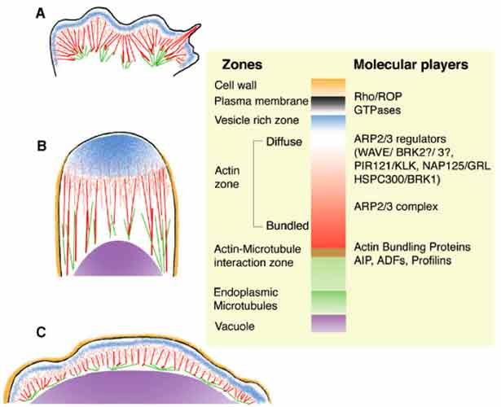

Interesting Parallels between Animal & Plant cells

A: An animal cell lamellipodium, and B: a tip-growing and C: a dif fuse-growing plant cell. In contrast to plant cells, the animal cell does not have a cell wall and is devoid of a large central vacuole. However, the zones extending from the plasma membrane to the endoplasmic microtubules are strikingly similar in all the three cells. In the plant cells, an expanding vacuole is a major component of the cell and plays an impor tant role in its expansion. One suggested role for the vacuole is to provide and maintain a strong outward directed pressure against the cell wall. Under such a condition, regions of the plasma membrane underlying a stretched or nascent cell wall would likely exhibit a regional protuberance. Turgor pressure could thus drive membrane protrusion. However, general turgor appears insufficient for focusing membrane protrusion and growth to a specific region of the plant cell for accomplishing polarized growth. The molecular players (right side of figure) that have been implicated in providing per tinent cues for localizing membrane protrusion during amoeboid locomotion are ver y similar to those being discovered now in plant cells. Considering that achieving membrane protrusion is the common aim for both motile animal cells and non-motile expanding plant cells this schematic comparison suggests a conservation of the fundamental molecular mechinery between animal and plant cells.
For details: See. The ARP2/3 complex: giving plant cells a leading edge. BIOESSAYS. 27(4). April 2005. and Conservation of boundary extension mechanisms between plants and animals. J. CELL BIOLOGY. 2005.
- NSERC funded project 046947.